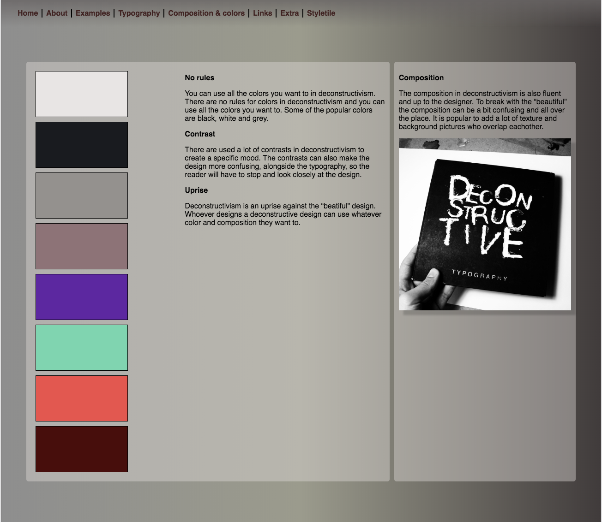
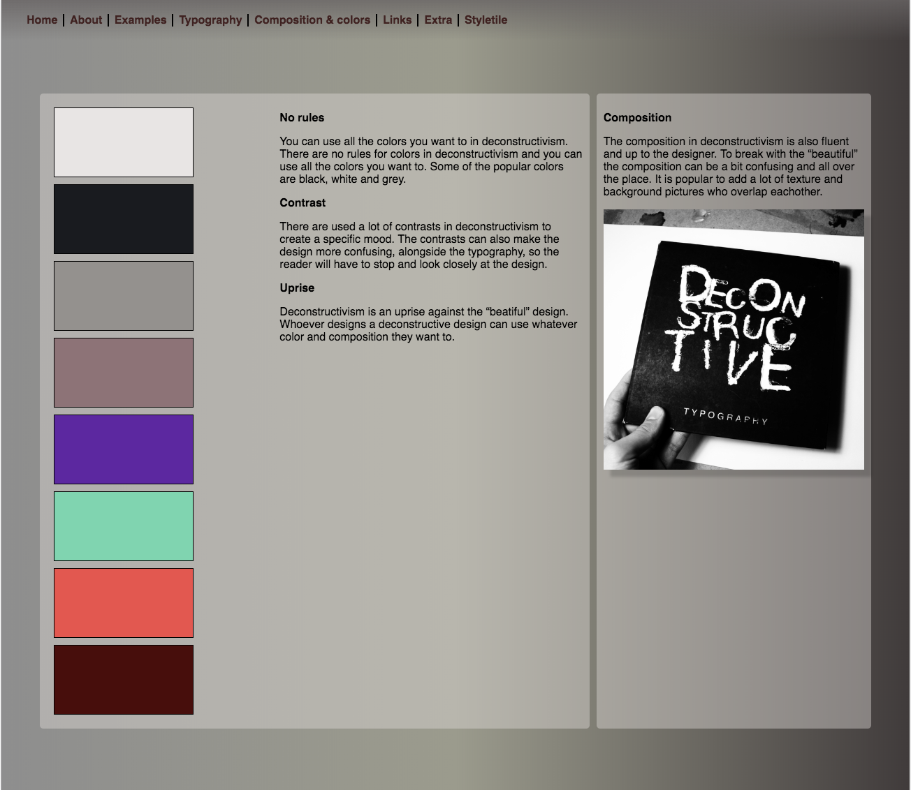

I denne opgave har jeg designet en responsiv hjemmeside, som indeholder en beskrivelse af stilarten dekonstruktivisme.
Formål:
At få en forståelse for og erfaring med de mest anvendte redskaber en multimediedesigner gør brug af, heraf design af digitale brugergrænseflader, digital kommunikation og opsætning af websites i HTML og CSS.
Proces:
Vi blev i dette tema introduceret til forskellige stilarter og fik efterfølgende tildelt en i grupper. Herfra skulle vi undersøge vores stilart og finde billeder der tydeligt viste de karakteristiske træk for stilarten. Herfra var det muligt for os at lave en grafisk analyse af stilarten og beskrive de karakteristiske træk, hvortil jeg nu kunne påbegynde mit moodboard.
Denne indeholdt inspiration til min stilartstemplate i form af typografi, farver og billeder. Min stilartstemplate illustrerede hvordan designet præcist skulle være, hvor elementerne skulle være placeret, etc., så da kodedelen gik i gang havde jeg denne at følge.
Det ville også have gjort det mere overskueligt for mig at lave et layoutdiagram, men i dette tilfælde havde vi fået tildelt et af vores lærere.
Efter designfasen blev vi introduceret til semantisk HTML, CSS samt de forskellige layoutmodes, herunder flexbox som jeg i denne opgave gjorde brug af. Flexbox giver en container muligheden for at udfylde al ledig plads på siden og rykke elementerne ind under/over hinanden.
Jeg valgte at bruge flexbox da dette layoutmode gjorde det muligt at rykke kasserne med dets indhold indunder hinanden, så designet fulgte mit template samt blev responsivt.
Refleksion:
Dette forløb gav mig et klart fundament og forståelse for semantisk HTML, opsætning af websites i HTML og CSS samt vigtigheden i placering af sin kode. Forløbet gav mig også en indsigt i design af brugergrænseflader samt hvor mange ting der ligger i det, bl.a. typografi - herunder bogstavets anatomi -, farver - Adobe Colorwheel -, etc. Det gav mig en forståelse for hvordan den mindste ting i et design kan have en påvirkning på kommunikationen af websitet samt hvordan man laver et godt design.
Programmer brugt:
- Adobe Photoshop
- Adobe InDesign
- Brackets
- FileZilla
 
